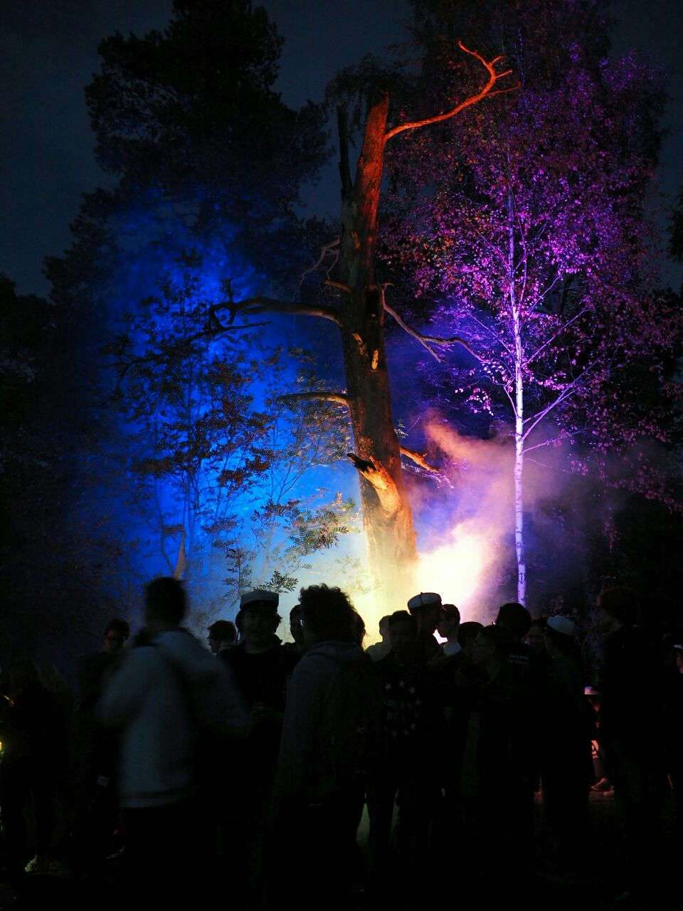

Waarin viikkotiedote 1 - Orientaatioviikko woop!
01.09.2015 fuksit / viikkotiedote /
 Nuotioilta, 5/5 meininki
WUUUUU!
Varaslähtö ja ensimmäinen päivä ovat nyt ohi ja minulla ainakin on ollut törkeän hauskaa! Fuksiryhmien liput olivat todella hienoja ja on myös siistiä ollut nähdä niitä tänään kulkemassa mukana. Mahtava meininki meneillään siis. :)
Varaslähdön ja Nuotioillan kuvia voi nyt fiilistellä Tietokillan kuvagalleriassa osoitteessa http://tietokilta.kuvat.fi. Galleriaan tulee pitkin vuotta kuvia eri tapahtumista ja jos tykkäät kuvata, ota ihmeessä hallitukseen yhteys, niin voimme lisätä sinunkin kuvia galleriaan.
Alla on aikamoinen wall-of-text, mutta tärkeimmät on tässä heti ensimmäisenä! Lue ainakin ne huolella läpi. :) Ja ihan alhaalla on yllätys, tsekkaa sekin. Plöö!
TÄRKEÄÄ
Fuksien ilmoittautuminen
Jos et ole jo ilmoittautunut Tietokillan sivuilla Fuksi-ilmoon, tee se nyt osoitteessa http://tietokilta.fi/tapahtumat/ilmot/fuksi2015. Näin varmistat, että pysyt helposti perillä kaikista fukseja koskettavista asioista.
Haalareiden sovitus
Haalarit 2015 ovat täällä! Ota ISOihisi yhteys ja sovi haalareiden sovittamisesta heidän kanssaan. Sovitushaalareita on Kiltahuoneella. Kun sopiva koko on löytynyt, ilmoita se tänne: http://tietokilta.fi/tapahtumat/ilmot/haalarikokoilmo2015. Jos sopivia kokoja ei löydy, ilmoita "Muu" ja kirjoita minkä kokoisen arviolta tarvitsisit.
Ilmoittautuminen fuksisitseille on auki!
Eeppiset fuksisitsit tulevat ja niin pitäisi sinunkin tulla niille mukaan!
Sitsit ovat akateeminen pöytäjuhla, jossa lauletaan, syödään ja juodaan hyvin, että myös kuullaan monenlaisia esityksiä ja päästään myös ehkä vähän tanssimaankin. Kolmen ruokalajin tarjoilu pitää huolen, että nälkä pysyy poissa koko sitsien ajan.
Sitsit ovat olennainen osa teekkarikulttuuria, niinpä opiskelijaelämästä jää kohtuuttoman suuri osa näkemättä, jollei yksillekään sitseille osallistu. Tule siis fuksisitseille kokemaan yksi opiskelijakulttuurin hienoimmista ilmiöistä sekä nauttimaan erinomaisista tarjoiluista.
Fuksisitsit juhlitaan maanantaina 14.9. klo 18:15 alkaen T-talossa. Pukukoodina on tumma puku. Sitsit maksavat fukseille vain 10 euroa ja paikan päältä on myös mahdollista ostaa laulukirjoja 6.5 euron hintaan.
Jatkot järjestetään Otaniemen Rantasaunalla, jossa odottaa lämmin sauna ja palju. Sieltä on myös mahdollista ostaa ruokaa sekä virvokkeita, joten muistakaa ottaa pyyhe sekä käteistä mukaan!
Ilmoittautuminen fuksisitseille tapahtuu killan sivuilta: https://tietokilta.fi/tapahtumat/ilmot/fuksisitsit2015
Facebook-tapahtuma: https://www.facebook.com/events/853996871315517/
P.S. Jos jotain kysyttävää heräsi tai mietit kannattaako sinun tulla, ota yhteys minuun! :)
Viikon fuksitapahtumat
Leffailta ti 2.9. klo 20:00 @ Kiltahuone
Aalto Afterpartyn vaihtoehtojatkot!
Kokoonnutaan kiltahuoneelle katsomaan hyviä elokuvia ja syömään perus leffanaposteltavia. Jos Afterpartyn lippu jäi saamatta tai pitkän päivän jälkeen tekee mieli vain rentoutua, niin tänne ehdottomasti kannattaa tulla. Leffailta alkaa heti Aalto Partyn jälkeen kello 20:00 ja jatkuu niin pitkään kuin leffoja riittää.
Leffalistaus: Brave, Aladdin, Liikkuva linna tai Kingsman, päätetään paikan päällä.
Haalarigaala ke 2.9. klo 15:30 @ T2-luentosali, T-talo
Haalarigaalassa pääset tutustumaan teekkareiden haalarikulttuuriin, kuulemaan kuinka niitä täytyy hoitaa ja mitä kaikkea niihin voikaan kiinnittää. Huhujen mukaan muiden kiltojen fuksikapteenit ovat myöskin tulossa paikalle, jännittävää!
Gaalan lopuksi pääset ostamaan omat upouudet ja hienot haalarit. Huomaa, että haalareiden käyttöoikeus pitää ansaita ennen niiden käyttämistä julkisuudessa! Kuulemma sellaisen voi ansaita Kiltakasteessa...
Muista sovituttaa haalarisi fuksiryhmän kanssa ennakkoon ja merkitse ne tänne: https://tietokilta.fi/tapahtumat/ilmot/haalarikokoilmo2015.
Kiltakaste ke 2.9. klo 17:45 @ Paikka X, yhteislähtö T-talolta
Kiltakaste on ensimmäinen vilkaisusi kiltaelämään. Opit tapahtumassa mitä kaikkea hienoa Tietokillassa ja teekkarina pääsee tekemään sekä kokemaan ja pääset tutustumaan opiskelutovereihisi.
Lopuksi koittaa mystinen fuksin ensiaskel - mikä se on, selviää paikan päällä.
Yhteislähtö bussilla T-talon edestä klo 17.45. Ole ajoissa! https://tietokilta.fi/tapahtumat/766
Fuksiexcun ilmoittautuminen aukeaa torstaina klo 9:00
Fuksivuoden ensimmäinen tilaisuus tutustua Otaniemen ulkopuoliseen teekkarielämään sekä ohjelmistoyritys Futuriceen. Loppuillasta pääsemme tutustumaan paikalliseen TiTeen eli Tampereen tietoteekkareihin! Heillä on meille sauna varattuna sekä suunniteltuna muuta ilta-aktiviteettia. Reissu maksaa 16 euroa.
Lisätietoa ja ilmoittautuminen osoitteessa http://tietokilta.fi/tapahtumat/777
Waarin kommentti: Excursiot ovat aina täyttyneet lähes heti, kannattaa siis olla nopea ilmoittautumisen kanssa! Ulkomatkat muita teekkareita tapaamaan ovat myös täynnä yllätyksiä eikä ikinä tiedä mitä TiTeläiset ovat tällä kertaa keksineet. Minä ainakin lähden innolla katsomaan mitä Tampereelle kuuluu. :)
Otasuunnistus torstaina klo 17:00 @ Amfi
Otasuunnistuksessa fuksit pääsevät tutustumaan Otaniemen eri yhdistyksiin ja toimijoihin mitä hullunkurisempien rastien muodossa sekä seikkailemaan pilke silmäkulmassa kunnon teekkarin tavoin. Suunnistuksen aikana fuksit keräävät rasteilta pisteitä, ja ilta huipentuu tapahtuman jatkoilla Servin mökissä (Smökki) järjestettävään finaaliin, jonka voittajille on luvassa huimia palkintoja!
Alkupamaus kajahtaa kello 17.00 Amfilta. Älä myöhästy!
P.S. Tapahtumaan kannattaa muistaa varata käteistä rahaa esimerkiksi haalarimerkkejä varten.
Facebook-tapahtuma: https://www.facebook.com/events/934849853224018/ Tapahtuma killan sivuilla: http://tietokilta.fi/tapahtumat/767
Kaukkarit perjantaina 4.9. klo 20:00 alkaen @ Smökki
Oiva orientaatioviikon lopetustapahtuma. Ennakkoliput ovat myyty loppuun, mutta ovelta voi vielä saada lippuja. Myös Facebookissa voi kysellä lippujen perään.
Kaukkarit, koska miten muuten voisikaan taas uusi kouluvuosi paremmin alkaa!
SIK, KIK ja IK järjestävät jälleen fuksiviikon parhaat bileet Smökissä perjantaina 4.9. Paikalla, DJ, livemusaa ja tietty uudet fuksit! Tule siis tutustumaan uusiin ihmisiin ja tapaamaan vanhoja kavereita kesän jälkeen hyvän musiikin tahdittamana, josta Sosiaalifobia pitää huolen.
Liput maksavat ovelta 6€ ja lipun hintaan sisältyy haalarimerkki!
MITÄ? Kaukkarit!
MISSÄ? Smökki
MILLOIN? 4.9. klo 20 alkaen
HINTA? 6€ (ovelta) sis. haalarimerkin
Tapahtuma Facebookissa: https://www.facebook.com/events/1102246739805089/
Fuksit 2015 <3

Tässä olette te ja mun mielestä ootte ihan huippu jengi! <3 On ilo olla juuri teidän fuksiwaari.
Tehdään tästä yhdessä hyvä vuosi. :)
Hauskaa orientaatioviikkoa!
Joonas (ultsi)